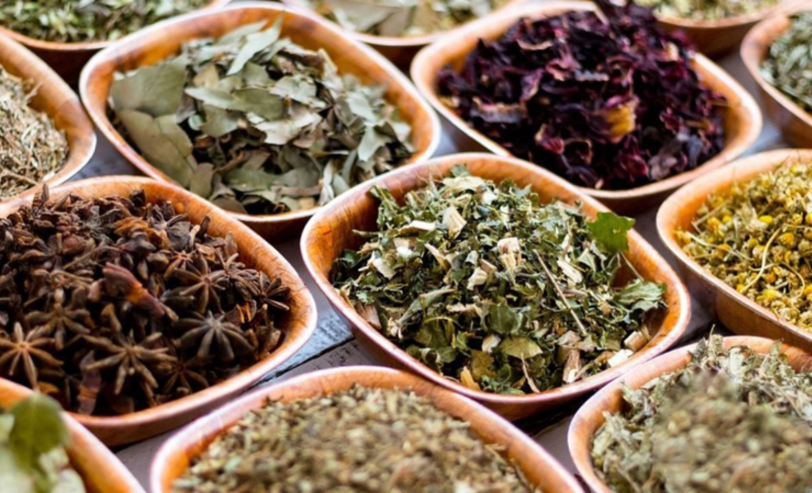
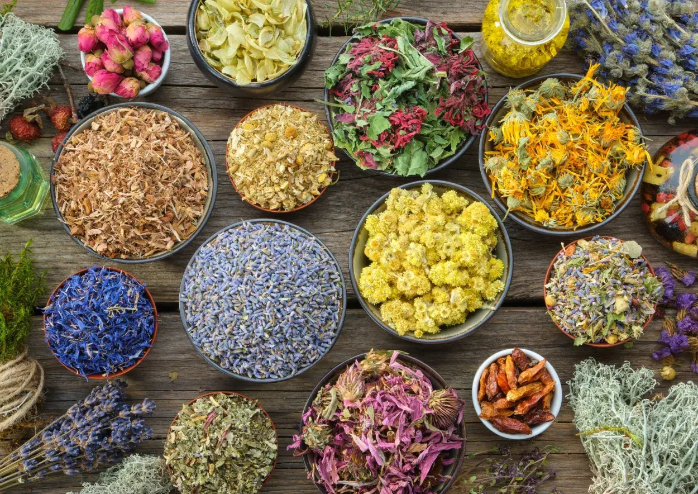
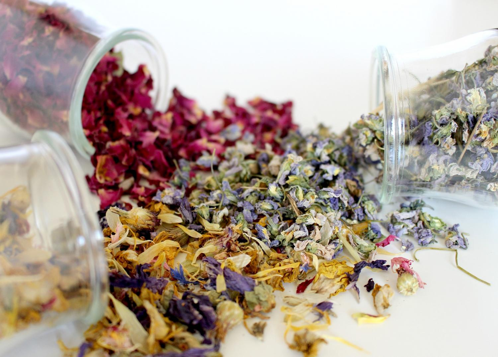

Descubrí nuestra selección de hierbas y flores cuidadosamente elegidas, inspiradas en las recetas y costumbres que han acompañado generaciones de sanjuaninos.



Contactanos por whatsapp y asesorate de manera sencilla y gratis
Contamos con técnicos especializados en hierbas e infusiones
Trae tu envase y te hacemos un descuento en tu compra!